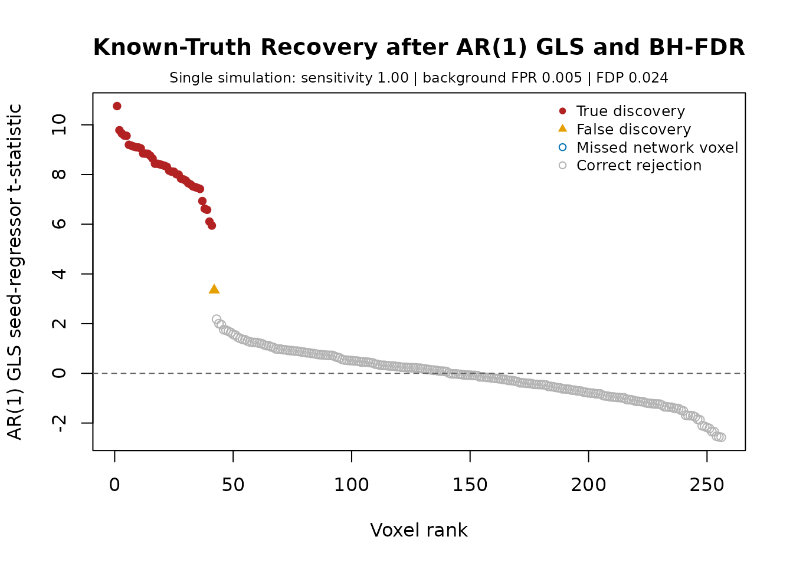

Functional Connectivity (Seed-Based)
Bradley R. Buchsbaum
2026-08-22
Source:vignettes/functional_connectivity.Rmd
functional_connectivity.RmdOverview
Seed-based functional connectivity analysis is a fundamental technique in fMRI research for identifying brain regions that show correlated activity with a specific region of interest (the “seed”). This vignette demonstrates how to perform seed-based connectivity analysis using fmrireg’s flexible design matrix and GLM framework.
The approach treats the seed time series as a covariate rather than computing simple correlations. This lets the model adjust for scanner drift and other nuisance variables while estimating seed coupling. Because the simulated noise is autocorrelated, we use an AR(1) temporal model. Because we test the seed coefficient at every voxel, discoveries are defined by Benjamini–Hochberg (BH) false-discovery-rate correction rather than uncorrected voxelwise p-values.
To illustrate the method clearly, we’ll work with simulated data where we know the ground truth. We’ll create a dataset with a hidden network of voxels that share a common signal with our seed region, then recover this network using our connectivity analysis.
Creating a Test Dataset with Known Connectivity
First, we generate the data directly from the model we intend to fit.
Every voxel has independent AR(1) errors with the same
rho = 0.3; there is no unmodeled task signal. This matters:
calibration cannot be assessed when the generator contains mean
structure that the fitted model silently omits.
set.seed(42)
Tlen <- 180L
TR <- 2
V <- 256L
true_rho <- 0.3
simulate_ar1_errors <- function(n_time, n_voxels, rho,
innovation_sd = 1) {
innovations <- matrix(
rnorm(n_time * n_voxels, sd = innovation_sd),
nrow = n_time, ncol = n_voxels
)
errors <- matrix(0, nrow = n_time, ncol = n_voxels)
errors[1, ] <- innovations[1, ] / sqrt(1 - rho^2)
for (time_index in 2:n_time) {
errors[time_index, ] <-
rho * errors[time_index - 1L, ] + innovations[time_index, ]
}
errors
}
Y <- simulate_ar1_errors(Tlen, V, rho = true_rho)
dim(Y)
#> [1] 180 256Now we’ll create our ground-truth connectivity pattern. We generate an external seed time series and inject it into a known subset of voxels. The series is deliberately external: this simulation tests recovery against known truth and is not pretending to perform seed extraction. A real analysis would extract a summary series from a prespecified ROI.
# Generate the signal of interest and an independent negative-control probe.
seed_ts <- arima.sim(model = list(ar = 0.5), n = Tlen)
seed_ts <- as.numeric(base::scale(seed_ts))
null_probe <- arima.sim(model = list(ar = 0.4), n = Tlen)
null_probe <- as.numeric(base::scale(null_probe))
# Define which voxels belong to our injected network
anchor_voxel <- 10
net_idx <- c(anchor_voxel, sample(setdiff(seq_len(V), anchor_voxel), 40))
# Add the external seed signal to the network voxels
Y[, net_idx] <- Y[, net_idx] + 0.7 * seed_ts
# Rebuild the dataset from the modified matrix so the injected network signal
# is the data used by downstream model fitting.
dset_modified <- fmridataset::matrix_dataset(
Y,
TR = TR,
run_length = Tlen,
event_table = data.frame(onset = 0, run = 1)
)Modeling Scanner Drift
Before we can accurately estimate connectivity, we need to account for low-frequency scanner drift that can create spurious correlations between voxels. The fmrireg package provides flexible tools for modeling these nuisance signals using basis functions.
# Create a sampling frame for our single run
sframe <- sampling_frame(rep(Tlen, 1), TR = TR)
# Model drift using B-splines. This object enters the fitted model below.
bmodel <- baseline_model(basis = "bs", degree = 3, sframe = sframe)Connectivity Analysis Using fmrireg’s GLM Framework
Instead of computing simple correlations, we treat the seed time
series as a GLM covariate. This estimates connectivity while
simultaneously controlling for confounds. covariate() adds
a regressor without HRF convolution because the seed signal is already
sampled as a BOLD time series.
# Set up the event model structure
# We need a minimal event_data frame to define the model structure
event_data <- data.frame(
onset = samples(sframe)[1], # Single onset to define the model
run = 1 # Single run indicator
)
# The null probe is included as a negative-control coefficient family: it is
# fitted at every voxel but was injected nowhere.
cov_data <- data.frame(
seed = seed_ts,
null_probe = null_probe
)
# Build the event model with both sampled time series as covariates.
emodel <- event_model(
onset ~
covariate(seed, data = cov_data, prefix = "seed") +
covariate(null_probe, data = cov_data, prefix = "null"),
data = event_data,
block = ~ run,
sampling_frame = sframe
)
# Combine event and baseline models with the dataset
fmodel <- fmri_model(emodel, bmodel, dset_modified)
# Fit the connectivity GLM across all voxels. The simulated errors are AR(1),
# so inference uses the corresponding global temporal-noise model.
fit <- fmri_lm(
fmodel,
dataset = dset_modified,
control = fmri_lm_control(
noise = noise_spec("ar1", pooling = "global")
)
)The seed-regressor statistic describes coupling after accounting for the baseline model and the fitted AR(1) covariance. It is not yet a whole-brain discovery decision; that requires multiplicity correction.
# Extract connectivity statistics using the estimate output itself
all_stats <- as.matrix(stats(fit, type = "estimates"))
seed_cols <- grep("seed", colnames(all_stats), value = TRUE)
if (length(seed_cols) == 0) {
stop("No seed estimate found in fitted model output")
}
seed_col_name <- seed_cols[1]
t_seed <- as.numeric(all_stats[, seed_col_name])
# Correct the seed-coefficient p-values across all fitted voxels.
all_pvals <- as.matrix(p_values(fit, type = "estimates"))
p_seed <- as.numeric(all_pvals[, seed_col_name])
q_seed <- stats::p.adjust(p_seed, method = "BH")
discovered <- is.finite(q_seed) & q_seed < 0.05
# The negative-control coefficient is null at every voxel.
null_col_name <- grep("^null", colnames(all_pvals), value = TRUE)
stopifnot(length(null_col_name) == 1L)
q_null <- stats::p.adjust(
as.numeric(all_pvals[, null_col_name]), method = "BH"
)
null_discovered <- is.finite(q_null) & q_null < 0.05
fitted_rho <- as.numeric(ar_parameters(fit, scope = "raw")[[1]])
# Check the distribution of our connectivity map
summary(t_seed)
#> Min. 1st Qu. Median Mean 3rd Qu. Max.
#> -2.5693 -0.6539 0.2129 1.2361 1.1158 10.7542Validating the Results
Since the network membership is known, we can report both recovery and error. Sensitivity is the fraction of injected network voxels discovered after BH correction. Background false-positive rate (FPR) is the fraction of null voxels called significant. False-discovery proportion (FDP) is the fraction of all discoveries that are background voxels. A single FDP is a diagnostic, not an estimate of FDR; aggregate calibration is assessed in the next section.
mean_abs_t_network <- mean(abs(t_seed[net_idx]), na.rm = TRUE)
mean_abs_t_background <- mean(abs(t_seed[-net_idx]), na.rm = TRUE)
sensitivity <- mean(discovered[net_idx])
background_fpr <- mean(discovered[-net_idx])
n_discoveries <- sum(discovered)
n_false_discoveries <- sum(discovered[-net_idx])
false_discovery_proportion <- n_false_discoveries / max(1L, n_discoveries)
top_ranked <- order(t_seed, decreasing = TRUE)[seq_along(net_idx)]
top_rank_enrichment <- mean(top_ranked %in% net_idx)
stopifnot(
is.finite(mean_abs_t_network),
is.finite(mean_abs_t_background),
is.finite(sensitivity),
is.finite(background_fpr),
is.finite(false_discovery_proportion),
is.finite(top_rank_enrichment),
mean_abs_t_network > 5 * mean_abs_t_background,
sensitivity >= 0.9,
background_fpr <= 0.02,
abs(fitted_rho - true_rho) < 0.12,
top_rank_enrichment > 0.9
)
c(
mean_abs_t_network = mean_abs_t_network,
mean_abs_t_background = mean_abs_t_background,
BH_discoveries = n_discoveries,
sensitivity = sensitivity,
background_FPR = background_fpr,
false_discovery_proportion = false_discovery_proportion,
complete_null_discoveries = sum(null_discovered),
fitted_rho = fitted_rho,
top_rank_enrichment = top_rank_enrichment
)
#> mean_abs_t_network mean_abs_t_background
#> 8.284247789 0.815073477
#> BH_discoveries sensitivity
#> 42.000000000 1.000000000
#> background_FPR false_discovery_proportion
#> 0.004651163 0.023809524
#> complete_null_discoveries fitted_rho
#> 0.000000000 0.291413551
#> top_rank_enrichment
#> 1.000000000The effect-size separation, BH discoveries, sensitivity, FPR, and FDP
answer different questions. Reporting them together prevents a strong
ranking result from concealing null discoveries. The fitted AR
coefficient also checks that the temporal model is recovering the
generator’s rho = 0.3. None of these single-run quantities,
by itself, establishes repeated-sampling calibration.
Repeated-sampling calibration
We therefore repeat a smaller, correctly specified simulation 100 times. Each fit contains two coefficient families: the seed coefficient has a known 12-voxel network, while the independent negative-control coefficient is null at all 64 voxels. BH correction is applied separately to each family.
n_calibration <- 100L
calibration <- vapply(
1000L + seq_len(n_calibration),
run_connectivity_fixture,
numeric(5)
)
fdp_bound <- one_sided_mean_bounds(calibration["fdp", ])
sensitivity_bound <- one_sided_mean_bounds(
calibration["sensitivity", ]
)
background_fpr_bound <- one_sided_mean_bounds(
calibration["background_fpr", ]
)
n_null_rejections <- sum(calibration["complete_null_rejection", ])
complete_null_upper <- one_sided_binomial_upper(
n_null_rejections, n_calibration
)
calibration_summary <- data.frame(
metric = c(
"Mixed-family FDP",
"Network sensitivity",
"Background FPR",
"Complete-null family rejection rate",
"Fitted AR(1) coefficient (truth 0.3)"
),
estimate = c(
mean(calibration["fdp", ]),
mean(calibration["sensitivity", ]),
mean(calibration["background_fpr", ]),
mean(calibration["complete_null_rejection", ]),
mean(calibration["fitted_rho", ])
),
one_sided_95_bound = c(
fdp_bound[["upper"]],
sensitivity_bound[["lower"]],
background_fpr_bound[["upper"]],
complete_null_upper,
NA_real_
),
bound_direction = c("upper", "lower", "upper", "upper", "-")
)
stopifnot(
fdp_bound[["upper"]] <= 0.08,
sensitivity_bound[["lower"]] >= 0.8,
background_fpr_bound[["upper"]] <= 0.025,
complete_null_upper <= 0.15,
abs(mean(calibration["fitted_rho", ]) - true_rho) < 0.08
)
knitr::kable(calibration_summary, digits = 3)| metric | estimate | one_sided_95_bound | bound_direction |
|---|---|---|---|
| Mixed-family FDP | 0.046 | 0.057 | upper |
| Network sensitivity | 1.000 | 1.000 | lower |
| Background FPR | 0.012 | 0.015 | upper |
| Complete-null family rejection rate | 0.080 | 0.140 | upper |
| Fitted AR(1) coefficient (truth 0.3) | 0.295 | NA | - |
The first three bounds use one-sided 95% t bounds for Monte Carlo means across independent fixtures. For the complete-null family, any BH discovery makes that replicate’s FDP equal to one, so the table reports the exact one-sided 95% Clopper–Pearson upper bound on its rejection probability. This finite simulation is a regression stress test, not a proof of universal FDR control. The package test repeats the same contract over 200 fixtures.
Visualizing the Connectivity Map
A rank-ordered view shows both ground truth and the corrected decision. Red circles are true discoveries, amber triangles are false discoveries, blue open circles would mark missed network voxels, and gray open circles are correctly rejected background voxels.
keep <- which(is.finite(t_seed))
ord <- keep[order(t_seed[keep], decreasing = TRUE)]
is_network <- ord %in% net_idx
is_discovered <- discovered[ord]
point_class <- ifelse(
is_network & is_discovered, "true discovery",
ifelse(
!is_network & is_discovered, "false discovery",
ifelse(is_network, "missed network voxel", "correct rejection")
)
)
point_col <- c(
"true discovery" = "firebrick",
"false discovery" = "#E69F00",
"missed network voxel" = "#0072B2",
"correct rejection" = "gray70"
)
point_pch <- c(
"true discovery" = 16,
"false discovery" = 17,
"missed network voxel" = 1,
"correct rejection" = 1
)
stopifnot(length(ord) > 0)
plot(
seq_along(ord),
t_seed[ord],
pch = unname(point_pch[point_class]),
col = unname(point_col[point_class]),
main = "Known-Truth Recovery after AR(1) GLS and BH-FDR",
xlab = "Voxel rank",
ylab = "AR(1) GLS seed-regressor t-statistic"
)
abline(h = 0, lty = 2, col = "gray40")
legend(
"topright",
legend = c(
"True discovery",
"False discovery",
"Missed network voxel",
"Correct rejection"
),
col = unname(point_col),
pch = unname(point_pch),
cex = 0.8,
bty = "n"
)
mtext(
sprintf(
"Single simulation: sensitivity %.2f | background FPR %.3f | FDP %.3f",
sensitivity, background_fpr, false_discovery_proportion
),
side = 3, line = 0.25, cex = 0.75
)
Extending to Real Data
With real data, define the seed independently of the tested effect, then extract a prespecified summary such as the mean time series across an ROI. Avoid selecting the seed from the same connectivity statistic being tested; that circular choice invalidates the inferential interpretation.
For a more complete analysis, prespecify nuisance regressors such as
motion or physiological signals; baseline_model() accepts
them through nuisance_list. If global signal regression or
temporal filtering is used, declare it explicitly because either choice
changes the estimand and its interpretation.
For whole-brain connectivity mapping, declare the temporal covariance model, nuisance strategy, multiplicity procedure, and voxel inclusion mask before interpreting discoveries. ROI-to-ROI analysis requires its own correction across tested edges.
Summary
This vignette used a seed covariate, a spline baseline, AR(1) GLS, and BH-FDR correction to recover a known injected network. A negative-control coefficient family and repeated simulations distinguish an appealing single map from calibration evidence. The figure displays the corrected decision, while the stress table reports sensitivity, null errors, and fitted AR behavior with Monte Carlo bounds. Real-data validity still depends on defensible seed definition, nuisance modeling, temporal covariance, and multiplicity control.